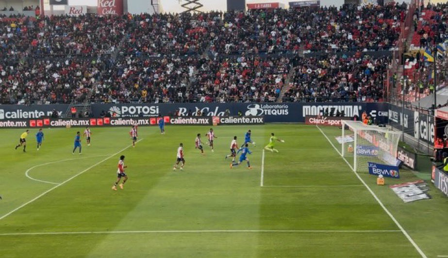

El Guadalajara consolidó su posición como superlíder absoluto del Clausura 2026 tras vencer 3-2 al Atlético San Luis como visitante en el Estadio Alfonso Lastras este 31 de enero de 2026. Con este resultado, el equipo dirigido por Gabriel Milito mantiene un paso perfecto con 4 victorias en 4 partidos.

Crónica: Un liderato sufrido y polémico
La victoria de Chivas no estuvo exenta de drama. A pesar de mostrar un dominio ofensivo liderado por jugadores como Richard Ledezma, Daniel Aguirre y Armando "La Hormiga" González (quien ha sido clave en este inicio de torneo), el Rebaño tuvo que resistir la presión potosina y las constantes intervenciones del videoarbitraje.
Claves del Encuentro
La Polémica: El encuentro fue descrito como de "intensidad de liguilla" con revisiones del VAR que influyeron en el desarrollo del juego, manteniendo la incertidumbre hasta el último segundo.
La Zaga: Luis Romo fue fundamental para contener los embates finales de un San Luis que nunca bajó los brazos.

Tabla General - Clausura 2026 (Primeros Lugares)
| Pos | Equipo | Juegos | Puntos | Diferencia |
|---|---|---|---|---|
| 1 | Chivas | 4 | 12 | +5 |
| 2 | Cruz Azul | 4 | 9 | +3 |
| 3 | Atlas | 4 | 9 | +2 |
| 4 | Pumas | 4 | 8 | +4 |
Próximo Compromiso
Chivas buscará extender su racha ganadora el próximo 6 de febrero cuando visite al Mazatlán FC en "El Encanto".